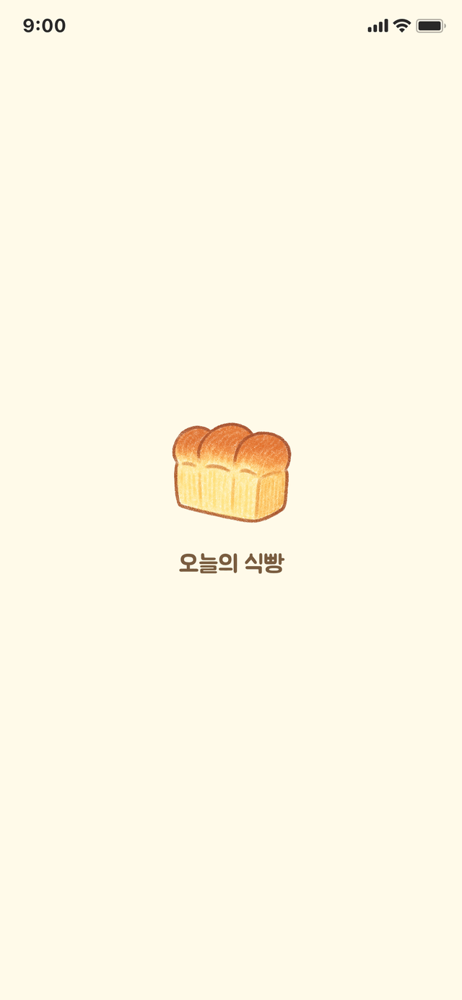
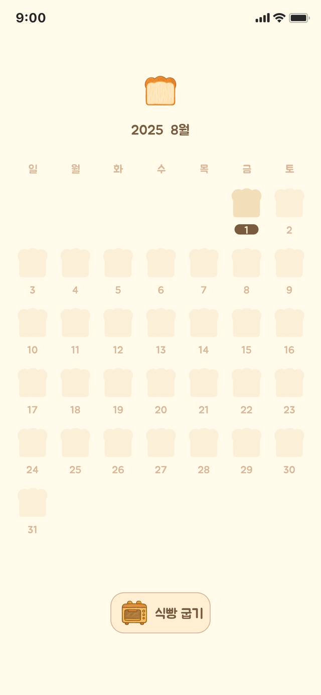
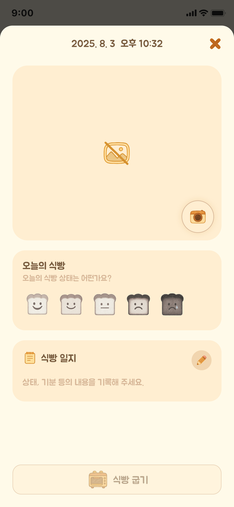
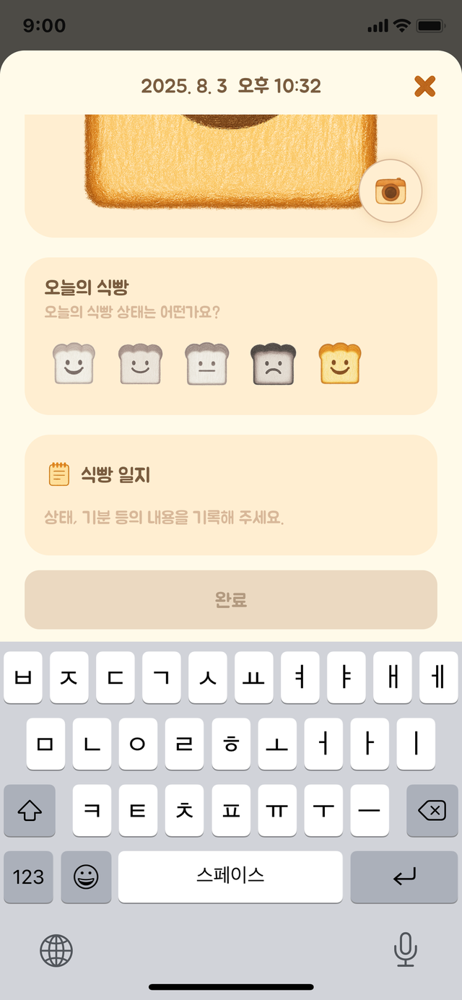
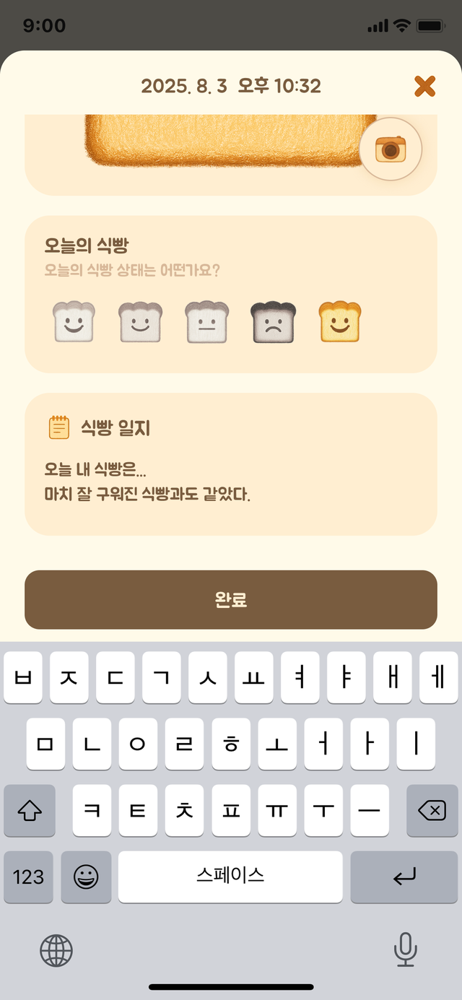
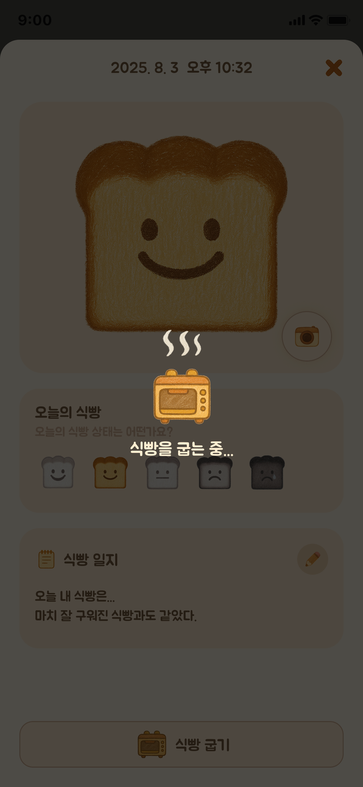
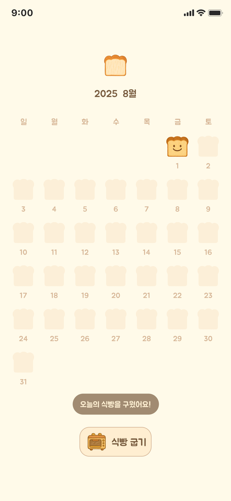
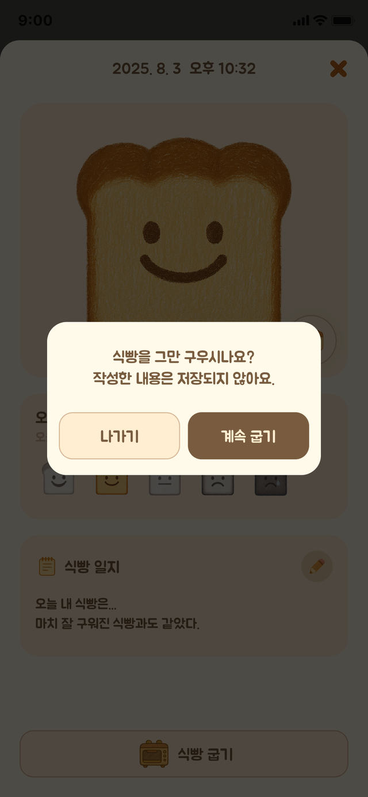

A self-journaling app where leaving a quick note about your mood and a one-line entry each day toasts a slice of bread on the calendar to golden brown. I built it solo from start to finish, covering planning, UX/UI, and the illustration tone and manner.

Most journaling apps ask for more fields than anyone wants to fill in every day. Today's Toast strips that down to just two things: today's mood (how toasted your bread is) and a one-line note, and nothing else. The goal was building a habit light enough to keep going without missing a day. The slices that pile up on the calendar become a visual record of the whole month's mood, at a glance.
The full journey from opening the app to that day's slice landing on the calendar.
STEP 1 · Splash

STEP 2 · Calendar Home
A calendar that renders the whole month as a tray of bread. Days without an entry sit as pale, untoasted slices; days you've journaled fill in with golden, toasted ones.

STEP 3 · Start an Entry

STEP 4 · Pick a Toast Level

STEP 5 · One-Line Entry
Pick today's mood across 5 stages, from a smiling slice to a burnt one, leave just one short line, and the Done button lights up.

STEP 6 · Toasting

STEP 7 · Entry Complete
Tap Done and, after a brief loading animation of bread toasting in a toaster, today's calendar square fills in with the slice matching the toast level you chose.
